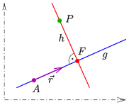
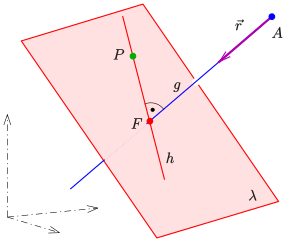

5.5 Abstände#
In diesem Kapitel vertiefen wir das Thema Lagebeziehungen von Geraden und Ebenen weiter. Falls Geraden und Ebenen parallel liegen oder windschief sind, ist die Information, welchen kürzesten Abstand die Objekte zueinander haben, relevant. Daher beschäftigen wir uns in diesem Kapitel mit Abstandsberechnungen.
Lernziele#
Lernziele
Sie kennen die Begriffe Lot und Lotfußpunkt.
Sie können den Abstand eines Punktes zu einer Ebene berechnen.
Sie können den Abstand eines Punktes zu einer Geraden berechnen.
Sie können den Abstand von Geraden zueinander berechnen. Bei windschiefen Geraden können Sie zusätzlich die Lotfußpunkte berechnen.
Sie können den Abstand von Geraden zu Ebenen berechnen.
Sie können den Abstand zweier Ebenen zueinander berechnen.
Lot und Lotfußpunkt#
Ein Lot ist in der Mathematik eine Strecke oder eine Gerade, die auf einer anderen Geraden oder einer Ebene senkrecht steht. Der Schnittpunkt des Lotes mit der Geraden oder der Ebene wird Lotfußpunkt genannt. In den folgenden zwei Beispielen wird das Lot (in rot) durch einen Punkt \(P\) auf eine Gerade \(g:A+s\cdot\vec{r}\) dargestellt. In der ersten Abbildung wird der zweidimensionale Fall in einer Ebene gezeigt, in der zweiten Abbildung das gleiche im dreidimensionalen Raum. In beiden Fällen wird der Lotfußpunkt mit \(F\) bezeichnet.


Fig. 13 2D: Lotgerade (rot) durch den Punkt \(P\) auf die Gerade \(g: A + s\cdot\vec{r}\); Quelle: Wikimedia Ag2gaeh, Lizenz: CC BY-SA 4.0#


Fig. 14 3D: Lotgerade (rot) durch den Punkt \(P\) auf die Gerade \(g: A + s\cdot\vec{r}\); Quelle: Wikimedia Ag2gaeh, Lizenz: CC BY-SA 4.0#
Abstand eines Punktes zu einer Ebene#
Liegt die Ebenengleichung in der hesseschen Normalform vor, ist die Berechnung des Abstandes zwischen einem Punkt \(Q\) und der Ebene \(E\) recht einfach. Wir setzen also voraus, dass die Ebene beschrieben wird durch
wobei \(\vec{n}\) ein normierter Normalenvektor der Ebene ist, also \(|\vec{n}|=1\) gilt, und \(P\) ein Punkt der Ebene ist. Dann wird der Abstand \(d(Q,E)\) von \(Q\) zur Ebene \(E\) berechnet, indem \(Q\) für \(X\) eingesetzt wird:
Das Ergebnis \(d(Q, E)\) kann positiv oder negativ sein. Ist \(d(Q, E) > 0\) positiv, dann liegt der Punkt \(Q\) auf der Seite der Ebene, in die der Nromalenvektor zeigt. Ist \(d(Q, E) < 0\) negativ, dann liegt \(Q\) auf der anderen Seite. Sollte \(d(Q,E) = 0\) gelten, liegt der Punkt \(Q\) in der Ebene. Der Abstand ist dementsprechend \(|d(Q,E)|\).
Ist nach den konkreten Koordinaten des Lotfußpunktes gefragt, gehen wir folgendermaßen vor. Zuerst stellen wir eine Hilfsgerade auf, die senkrecht durch die Ebene \(E\) geht und den Punkt \(Q\) enthält. Dann wird der Schnittpunkt \(F\) von der Hilfsgeraden mit der Ebene bestimmt. Damit kann dann auch der Abstand von \(Q\) zur Ebene \(E\) berechnet werden.
Ein detailliertes Beispiel wird in dem folgenden Video vorgerechnet:
Weitere Videos finden Sie hier:
Video “Abstand eines Punktes von einer Ebene” von Flip the Classroom
Video “Kürzester Abstand Punkt Ebene berechnen” von MathePeter
Video “Abstand Punkt zur Ebene” von Mathematrick
Übung “Abstand Punkt - Ebene” von Mathebattle
Üben Sie beide Varianten, den Abstand eines Punktes zu berechnen.
Abstand eines Punktes zu einer Geraden#
Es gibt verschiedene Möglichkeiten, den Abstand eines Punktes \(Q\) zu einer Geraden \(g: P + s\cdot\vec{v}\) zu berechnen. Eine einfache Möglichkeit ist, eine Hilfsebene folgendermaßen zu konstruieren:
Der Punkt \(Q\) liegt in der Hilfsebene \(E\).
Der Normalenvektor \(\vec{n}\) entspricht dem Richtungsvektor der Geraden \(\vec{v}\).
Dann genügt es, den Schnittpunkt der Geraden mit der Hilfsebene zu berechnen, den wir \(L\) nennen, weil es der Lotfußpunkt ist. Der Abstand von \(L\) zu \(Q\) ist der gesuchte Abstand.
Das Verfahren wird hier detailliert vorgestellt:
Weitere Videos finden Sie hier:
Video “Abstand eines Punktes von einer Geraden” von Flip the Classroom
Video “Abstand zwischen Punkt und Gerade” von MathePeter
Video “Abstand Punkt Gerade” von Mathematrick
Übung “Abstand Punkt-Gerade” von Mathebattle
Abstand einer Geraden zu einer Geraden#
Von den vier möglichen Fällen, wie eine Gerade zu einer Gerade liegen kann, sind für Abstandsberechnungen die beiden Fälle parallele Geraden oder windschiefe Geraden relevant. In den beiden anderen Fällen ist der Abstand Null.
Fall: parallele Geraden#
Sind die Gerade \(g_1: X = P_1 + s\cdot\vec{v}\) und \(g_2: X = P_2 + t \cdot\vec{v_2}\) parallel, dann nehmen wir einen beliebigen Punkt der Geraden \(g_1\) und berechnen den Abstand von diesem Punkt zur Gerade \(g_2\). Das kann beispielsweise der Punkt \(P_1\) sein.
Video “Abstand parallele Geraden” von Mathematrick
Fall: windschiefe Geraden#
Sind die Gerade \(g_1: X = P_1 + s\cdot\vec{v}\) und \(g_2: X = P_2 + t \cdot\vec{v_2}\) windschief, dann gibt es mehrere Verfahren, um den Abstand zu berechnen.
In dem folgenden Video werden die verschiedenen Verfahren vorgestellt. Soll nur der Abstand bestimmt werden, können Formeln genutzt werden. Wird jedoch nach den konkreten Lotfußpunkten gefragt, muss entweder das Lotfußpunktverfahren mit Hilfsebenen oder das Lotfußverfahren mit laufenden Punkten verwendet werden. Bitte schauen Sie sich das folgende Video und die dazugehörigen Erläuterungen an, um sich mit den verschiedenen Verfahren vertraut zu machen.
Video “Abstand windschiefer Geraden” von MathePeter
Übung “Abstand windschiefer Geraden” von Mathebattle
Üben Sie beide Varianten, den Abstand zweier windschiefer Geraden zu berechnen.
Abstand einer Geraden zu einer Ebene#
Betrachten wir eine Gerade, die in einer Ebene liegt oder eine Ebene durchstößt, dann ist der Abstand Null. Relevant ist bei der Abstandsberechnung einer Geraden zu einer Ebene nur der Fall, wenn die Gerade parallel zur Ebene liegt. Dann genügt es aber auch, einen beliebigen Punkt der Gerade zu nehmen und seinen Abstand zur Ebene zu berechnen.
Abstand einer Ebenen zu einer Ebene#
Auch hier ist nur der Fall relevant, wenn die beiden Ebenen parallel zueinander liegen. Auch hier genügt es, einen beliebigen Punkt der ersten Ebene zu nehmen und seinen Abstand zur zweiten Ebene zu berechnen. Schneiden sich higegen die beiden Ebenen oder sind sie identisch, ist ihr Abstand Null.
Übung “Abstand Ebenen” von Mathebattle
Zusammenfassung und Ausblick#
In diesem Kapitel haben wir die Analyse der LAgebeziehungen von Geraden und Ebenen vertieft, indem wir die Abstände von ihnen berechnen, sofern sie sich nicht schneiden und nicht identisch sind. Im nächsten Kapitel werden wir uns damit beschäftigen, welchen Winkel sie zueinander haben, wenn sie sich schneiden.